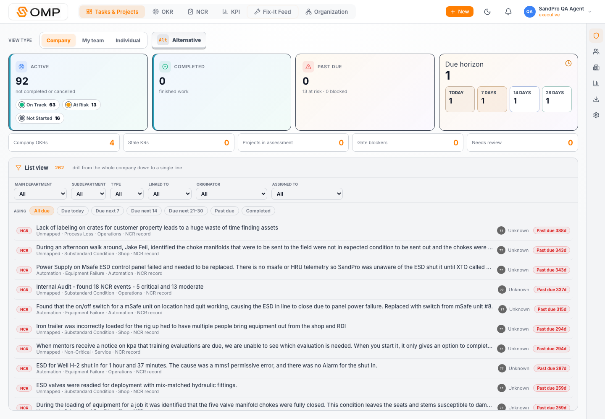
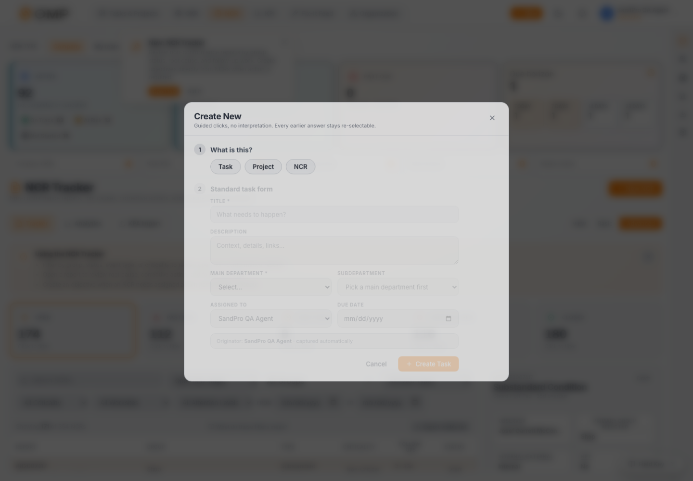
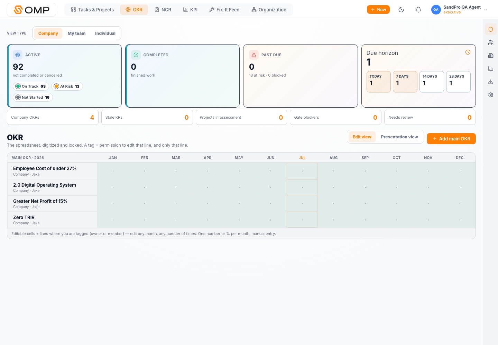
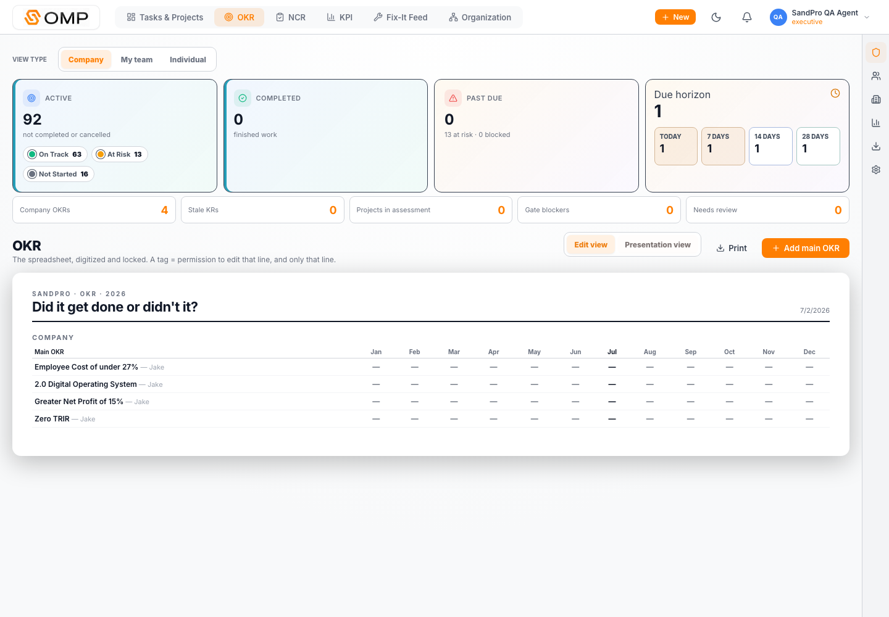
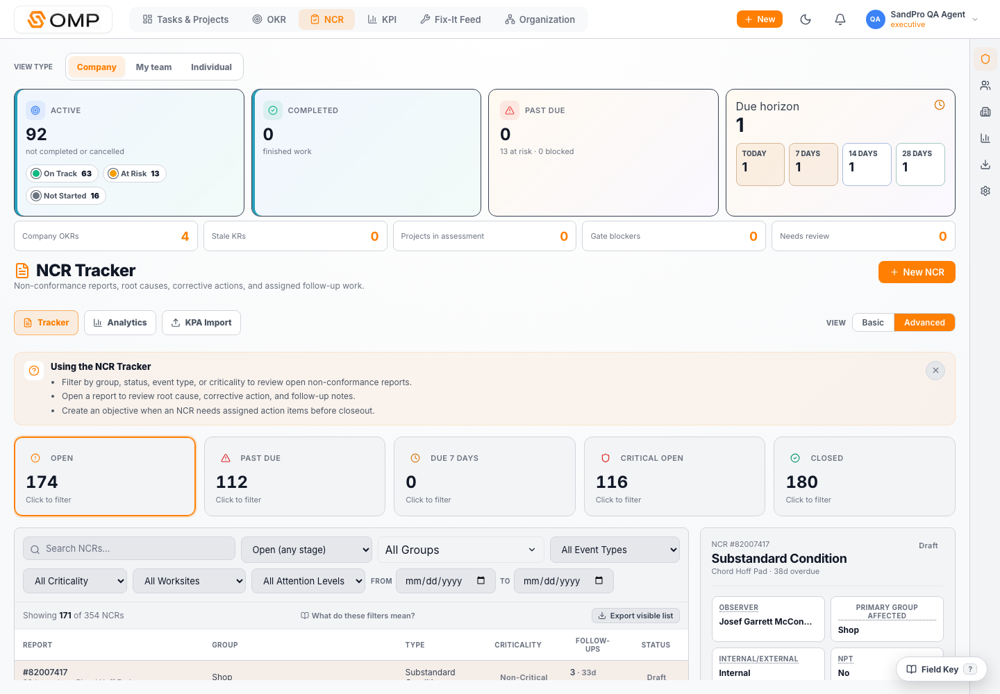
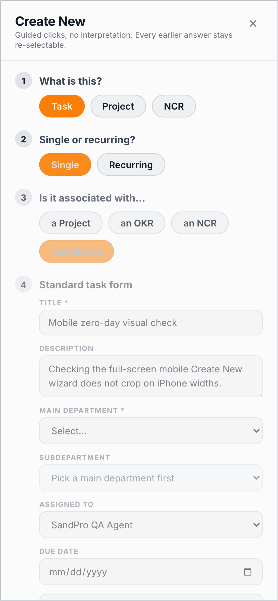
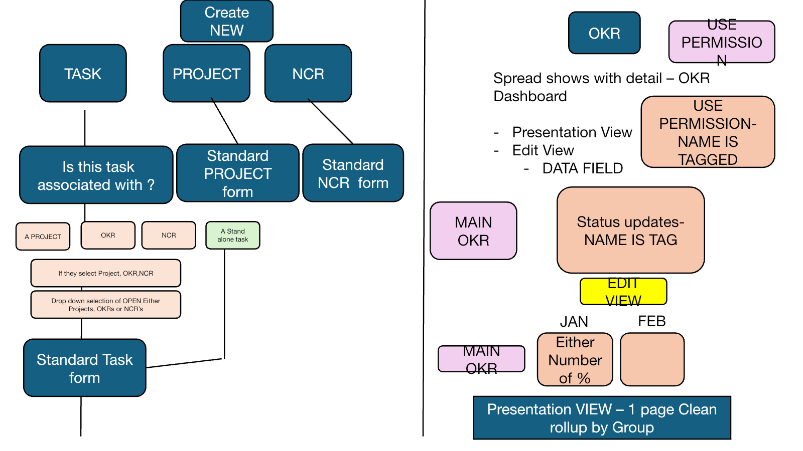
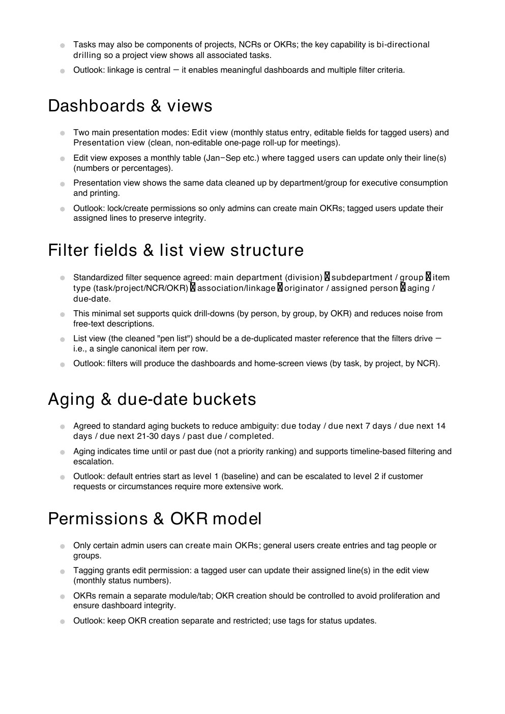
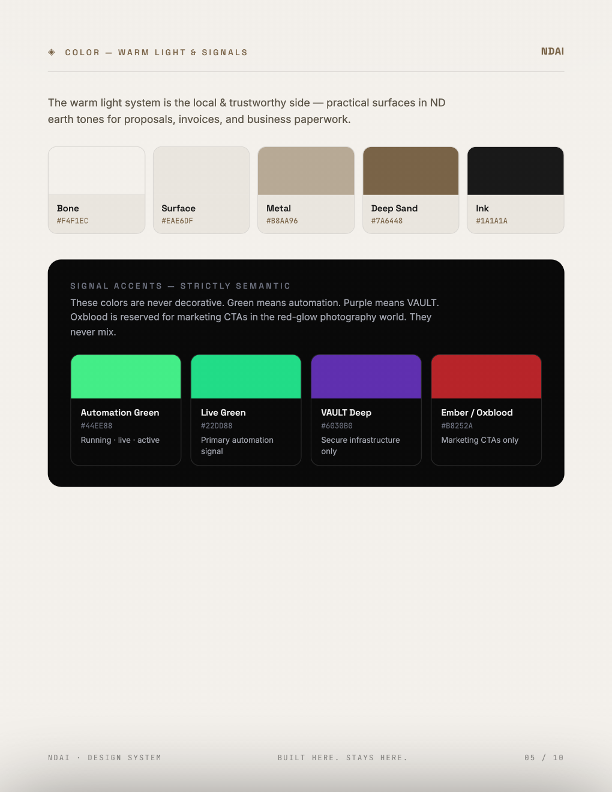

NDAI Light Review Packet / SandPro OMP
Jake Criteria Audit
A source-backed, both-surface review of the current local SandPro redesign worktree and live production at objectivetracker.net. Production was kept read-only throughout the audit.
Executive Verdict
Strong redesign progress, but not a full criteria completion claim
The local app now visibly represents most of Jake's workflow vision: separated OKR, Tasks & Projects as the home list, NCR and KPI dashboards, a guided Create New flow, edit/presentation OKR modes, filterable list views, and mobile scroll proof. The blockers are no longer the broad navigation surface. They are the live data contract, permission enforcement proof, and some depth in project/KR/KPI linkages.
Core IA, Create New, OKR modes, filters, mobile, and smoke paths pass. Some permission and workflow depth gaps remain.
Production login/navigation/display works read-only. Live data is not yet clean or fully linked.
Broken-buttons, mobile crop, modal scroll, nav, a11y, build, unit, schema, and production smoke checks passed in tested paths.
Permission model, canonical production data, KR hierarchy, KPI check-ins, and NCR-objective linkage need additional closure.
Source Ingestion
What was read and rendered
The audit criteria were built from the supplied materials before evaluating the app. The NDAI reference PDF has no extractable text layer, so its pages were rendered and visually inspected for light-mode styling cues.
| Artifact | Ingestion result | Role in audit | Evidence |
|---|---|---|---|
| NDAI Brand Reference.pdf | 10 pages rendered; 0 extractable text characters. | Light-mode aesthetics: warm paper, dark ink, restrained chrome, sand/metal accents, semantic green/red only. | Rendered page 1 |
| OKR_task workflow_ Summary.pdf | 3 pages, 5,672 extracted characters, all pages rendered. | Primary criteria spine for creation flow, linkage, edit/presentation views, filters, aging, permissions, and cleanup. | Extracted text |
| OKR_task workflow_ Transcript.pdf | 85 pages, 86,591 extracted characters, proof pages rendered. | Decision context for OKR separation, permission intent, task/project/NCR/OKR linkage, and dashboard taxonomy. | Extracted text |
| UNTITLED (1).pptx | 3 slides, 1,154 extracted characters, all slides rendered. | Flowchart wording Jake will recognize: Create New, standard forms, linked-to prompts, OKR dashboard, edit/presentation views, list filters. | Rendered slide 1 |
{kind=link}
{kind=link}
Summary pp. 1-2 and Deck slide 1 define the create flow as type-first, guided, and linked to open projects, OKRs, or NCRs when applicable.
Transcript pp. 15-16 and pp. 30-31 separate OKR from general create work and require edit and presentation modes.
Summary p. 2 and Deck slide 2 specify main department, subdepartment, type, linked-to, originator, assigned, aging, and view type.
Criteria Matrix
Jake criteria status by surface
Status definitions: Meets means verified in the current surface. Partially Meets means visible or structurally present but incomplete. Does Not Meet means the criteria is materially absent. Not Verifiable means the audit could not prove it without production mutation or missing live data.
| Criterion | Source anchor | Local redesign | Live production | Reason / evidence | Next action |
|---|---|---|---|---|---|
| Module taxonomy: Tasks & Projects, OKR, NCR, KPI, Fix-It, Organization | Transcript pp. 66-67; Deck slide 3. | Meets | Meets | Local and production captures show the redesigned navigation. The old generic Objectives nav is guarded by tests/jake-redesign-traps.spec.js. |
Keep nav names stable for Jake/Tim review. |
| Tasks & Projects as the canonical list/dashboard | Summary p. 2; Transcript pp. 23, 32, 67. | Meets | Partially Meets | Local list view implements one row per item and the filter chain. Live production renders the same surface, but linked project/KR data is mostly empty. | Backfill project/KR/NCR linkage so filters prove true from data, not only UI. |
| Create New guided flow with Task, Project, NCR only | Summary p. 1; Deck slide 1; Transcript pp. 20-22. | Meets | Meets | The wizard exposes Task, Project, NCR and excludes OKR from the general door. Mobile scroll and no-crop traps pass. | Extend field depth for project and NCR forms without changing the type-first flow. |
| OKR remains a separate tab/module | Summary p. 2; Transcript pp. 14-16. | Meets | Meets | OKR has its own route, nav item, edit mode, presentation mode, and production smoke proof. | Keep OKR creation out of general Create New. |
| OKR edit view and clean one-page presentation view | Summary p. 2; Transcript pp. 15, 30-31; Deck slide 1. | Meets | Partially Meets | UI has Edit view, Presentation view, and print action. Live data has too few metric check-ins to make the presentation view a complete operating report. | Seed/check live OKR metric check-ins and confirm print output with real monthly values. |
| Tagged users can edit only assigned OKR lines; admins create main OKRs | Summary p. 2; Transcript pp. 15-16, 27; Deck slide 1. | Partially Meets | Partially Meets | src/ompPermissions.js defines executive and manager as admins, but CreateWizardModal and OkrPage currently gate admin UI with executive only. Live RLS exists, but field-level tagged-line proof is not complete. |
Unify UI gates with the permission helper and run a manager/member edit-denial test against staging. |
| Linked-to behavior: task/project/NCR/OKR relationships | Summary pp. 1-2; Transcript pp. 21-23, 52; Deck slides 1-2. | Partially Meets | Does Not Meet | Local UI asks linked-to and open parent questions. Live data has no NCR-objective linkage, no objective parent hierarchy, and empty OKR project tables in the data probe. | Run a data-backfill pass that connects NCRs, projects, tasks, and OKRs to real parent records. |
| Aging buckets: due today, next 7, next 14, next 21-30, past due, completed | Summary p. 2; Transcript pp. 36-41, 56; Deck slide 2. | Meets | Meets | Dashboard list code implements the bucket logic and captures show the filter controls. Trap tests cover the list surface and mobile scroll. | Confirm Jake wants 21-30 retained instead of slide wording "Due Next 21" before final copy lock. |
| Main department and subdepartment filter taxonomy | Summary p. 2; Transcript pp. 35, 45-46, 52; Deck slide 2. | Meets | Partially Meets | UI implements dependent main/subdepartment filters. Live profiles and NCR rows still have sparse canonical department/class mapping. | Normalize live profile departments and NCR department groups against the five framework departments. |
| Reporting/data cleanliness: de-duplicated master list drives dashboards | Summary pp. 2-3; Transcript pp. 10, 23, 62. | Partially Meets | Partially Meets | Local list is structured as a canonical "pen list." Live objectives are mostly seeded, but class, KPI rows, metric check-ins, and link tables remain incomplete. |
Complete the master-list cleanup and publish a post-backfill data-quality scorecard. |
| KPI command center connected to OKR/project health | Transcript pp. 30-31; criteria inferred from KPI/OKR dashboard discussion. | Partially Meets | Does Not Meet | KPI UI and tests pass, but live KPI definition/datapoint/link/check-in tables are empty. The visible surface exists before the data model is populated. | Define KPI records and connect them to objective metrics before claiming KPI completion. |
| NCR dashboard and NCR-specific action tracking | Transcript pp. 62, 66-67; Deck slide 3. | Partially Meets | Partially Meets | NCR dashboard is visible locally and live. Live has 354 NCRs and 174 open/in-progress, but action items and objective links are empty in the data audit. | Create/read-only review of NCR linkage rules, then backfill or re-import action-item records. |
| Mobile navigation, modals, and scroll behavior | Operational quality requirement from current redesign acceptance. | Meets | Meets | Mobile crop checks passed across iPhone 12, iPhone 14 Pro, and iPhone 15 Plus widths; production desktop smoke passed. | Keep these tests as release gates for the presentation build. |
What Fully Works
Changes that should remain
These are the areas I would preserve because they align well with Jake's direction and held up under browser checks.
Tasks & Projects, OKR, NCR, KPI, Fix-It Feed, and Organization match the flowchart direction and remove the confusing "everything is Objectives" framing.
The wizard asks what type of work this is, then only shows relevant next prompts. OKR is intentionally kept out of the general create door.
The edit/presentation toggle maps to the spreadsheet-to-dashboard idea, with print behavior for the meeting-ready roll-up.
Main department, subdepartment, type, linked-to, originator, assigned, and aging are present and deterministic.
Build, lint, unit, schema, a11y, mobile no-crop, redesigned nav, KPI, production smoke, and capture flows passed.
Production is not an old unrelated surface. It shows the redesigned modules, but its live data does not yet fulfill the criteria behind those modules.
Source renders, app screenshots, mobile screenshots, and validation outputs are organized under a single evidence folder for follow-up proof.
Gaps And Decisions
What prevents a full criteria sign-off
The remaining issues are specific enough to close without reopening the entire redesign. They are mostly data and permission-hardening problems.
| Gap | Impact | Evidence | Recommended closure |
|---|---|---|---|
| Admin role mismatch | Jake asked for controlled OKR creation and tagged-line updates. The shared helper says manager and executive are admins, but current OKR/Create UI checks executive only. | src/ompPermissions.js vs src/pages.jsx admin gates. |
Use isAdminRole() everywhere and add staging tests for executive, manager, tagged contributor, and untagged contributor. |
| Live linkage is not populated | Filtering by linked OKR/NCR/project is central to Jake's reporting vision, but live relationship tables are mostly empty. | Live probe: no NCR-objective links, no objective parent hierarchy, empty OKR project/link tables. | Run a read-reviewed backfill plan from the cleaned spreadsheet, then rerun the criteria matrix. |
| KPI data tables are empty | The KPI command center can render, but it cannot be claimed as fully operational without KPI definitions, datapoints, links, and check-ins. | Data/schema subagent found empty KPI production tables. | Decide KPI source of truth, load the first KPI definitions, and tie KPI check-ins to OKR metrics. |
| Project detail depth is thinner than Task and OKR | Jake's project and linkage model works at the top level but needs more complete project drilldown and standard project form depth. | Create wizard currently has a compact standard form; project tables are empty live. | Add project detail view acceptance criteria: parent KR/NCR, action tasks, owner, due date, stage, blockers, and roll-up behavior. |
| Production taxonomy cleanup is incomplete | Clean reporting depends on canonical group/class fields. Live class and profile department coverage is still sparse. | Live probe: class only 1 of 92 objectives; canonical profile department only 4 of 32. |
Normalize people, objectives, and NCRs to the agreed department/subdepartment taxonomy. |
Local vs Live
Do not collapse these two truths
The local redesign and live production are close in surface shape, but the criteria verdict changes once live data quality and production permissions are considered.
| Area | Local redesign worktree | Live production read-only |
|---|---|---|
| Navigation/display | Passes redesigned nav, deep link, modal, mobile, KPI, and a11y checks. | Passes production smoke and visual captures for the same core modules. |
| Create/update proof | Create New can be inspected and tested locally without production writes. | Production was read-only; create/update mutation proof was not attempted. |
| Data contract | Schema and code support the model: objectives, members, projects, metric check-ins, NCR reports, action items, KPI tables. | Many tables are structurally present but under-populated: empty KPI tables, empty OKR project tables, no NCR-action rows, no objective-member rows. |
| Criteria verdict | Partially Meets, leaning strong on visible workflow and navigation. | Partially Meets, with live-data gaps preventing completion. |
Validation Log
Commands and browser checks run
Production validation used login/navigation/display and smoke checks only. No production QA records were created.
| Validation | Command / method | Result |
|---|---|---|
| Lint | npm run lint |
PassedBabel deoptimized a large generated page during lint/build output; no lint failure. |
| Build | npm run build |
PassedVite large chunk warning only. |
| Unit suite | npm run test:unit |
Passed119/119. |
| Schema suite | npm run test:schema |
Passed |
| Jake redesign traps + a11y | SANDPRO_E2E_PORT=5224 npx playwright test tests/jake-redesign-traps.spec.js tests/a11y.spec.js --project=chromium --project=mobile-chrome --workers=1 |
Passed8/8. |
| KPI system browser checks | SANDPRO_E2E_PORT=5225 npx playwright test tests/kpi-system.spec.js --project=chromium --project=mobile-chrome --workers=1 |
Passed10 passed, 2 mutation-gated tests skipped by design. |
| Mobile crop/screens | SANDPRO_E2E_PORT=5223 SANDPRO_MOBILE_EVIDENCE_DIR=docs/evidence/jake-criteria-audit-2026-07-02/app/mobile npx playwright test tests/mobile-crop.spec.js --project=mobile-chrome --workers=1 |
PassediPhone 12, iPhone 14 Pro, and iPhone 15 Plus evidence captured. |
| Local evidence capture | SANDPRO_E2E_PORT=5222 SANDPRO_JAKE_AUDIT_EVIDENCE_DIR=docs/evidence/jake-criteria-audit-2026-07-02/app/local npx playwright test tests/tmp-jake-audit-capture.spec.js --project=chromium --workers=1 |
PassedDesktop screenshots for core modules captured. |
| Production evidence capture | SANDPRO_SMOKE_BASE_URL=https://objectivetracker.net SANDPRO_JAKE_AUDIT_EVIDENCE_DIR=docs/evidence/jake-criteria-audit-2026-07-02/app/prod npx playwright test tests/tmp-jake-audit-capture.spec.js --project=chromium --workers=1 |
PassedRead-only screenshots for live production captured. |
| Production smoke | npm run smoke:prod |
Passed6/6. |
Evidence Gallery
Representative proof artifacts
The full screenshot and source-render set is in docs/evidence/jake-criteria-audit-2026-07-02/.
{kind=link}

{kind=link}

{kind=link}

{kind=link}

{kind=link}

{kind=link}


{kind=link}

{kind=link}

Reviewer Lanes
What was delegated and cross-checked
Parallel review lanes were used to separate criteria extraction, UI/browser traps, and data/schema truth. The final report reconciles their findings.
| Lane | Scope | Material finding |
|---|---|---|
| Source criteria extraction | Four supplied artifacts, source render proof, Jake criteria checklist, NDAI light styling notes. | Criteria converged around creation type, linkage, OKR separation, edit/presentation modes, permissions, list filters, aging, reporting cleanliness, and master-data cleanup. |
| Local UI/browser traps | Local worktree screens, routing, mobile, wizard, OKR, NCR, KPI, Fix-It, Organization, export/reporting surfaces. | Core visible redesign holds up; remaining local gaps are permission consistency and deeper project/form behavior. |
| Data/schema/live consistency | Schema tests, live read-only aggregate probes, RLS/policy inspection, targeted unit tests. | Schema supports the model, but production data is incomplete: empty KPI/project/check-in tables, sparse class taxonomy, no objective members, and no NCR-objective linkage. |
Next Actions
Best path to a real completion claim
The current redesign is good enough to show as a disciplined progress review. It is not yet good enough to close as "all of Jake's criteria are fulfilled."
Replace local executive-only checks with the shared executive-or-manager helper, then run explicit role-based staging tests for main OKR creation and tagged-line edit denial.
Backfill objective parents, objective members, OKR projects, KPI links, NCR action items, and NCR-objective links from the cleaned master list. Normalize departments and subdepartments.
Define what a standard project form and project drilldown must include, then add tests for parent linkage, associated tasks, owner, due date, blockers, and roll-up behavior.
Repeat local and production read-only validation and compare the same criteria rows so the final sign-off is evidence-backed and not based only on visual confidence.